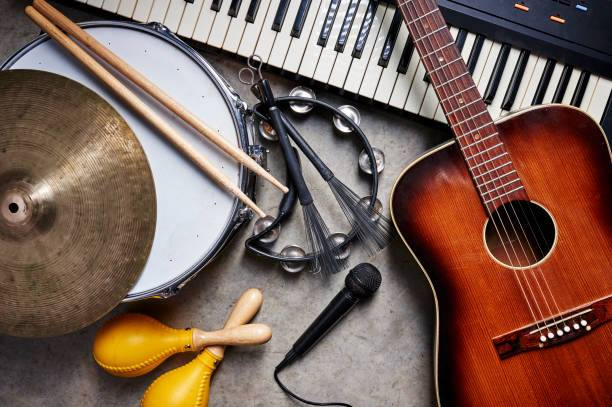

<ion-header>
  <ion-navbar>
    <ion-buttons left>
        <button ion-button menuToggle>
            <ion-icon name="menu"></ion-icon>
          </button>
    </ion-buttons>
    <ion-title>InstruMentor</ion-title>
    <ion-buttons right>
      <button ion-button>
          <ion-searchbar
          [(ngModel)]="myInput"
          [showCancelButton]="shouldShowCancel"
          (ionInput)="onInput($event)"
          (ionCancel)="onCancel($event)">
        </ion-searchbar>
      </button>
      <button ion-button>
        <ion-icon name="contact"></ion-icon>
      </button>
    </ion-buttons>    
  </ion-navbar>
</ion-header>


<ion-content padding>
  <h1 style="text-align: center; padding-top: 20px">InstruMentor</h1>
  <h3 style="text-align: center">A Fun Instrument Learning Experience!</h3>
  <div style="text-align: center"></div>
  <hr />
  <h6 style="text-align: center; padding-top: 10px">
    Want to learn your favourite instrument but are not able to find time for it? InstruMentor is your personalized, fully-automated instrument tutor.
  </h6>
  <p style="text-align: center; padding-top: 5px">
    <button ion-button color="primary" menuToggle>Take a Tour</button>
  </p>

</ion-content>
